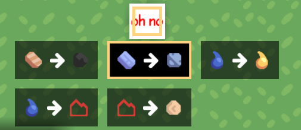
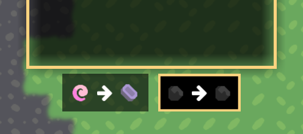
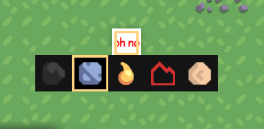
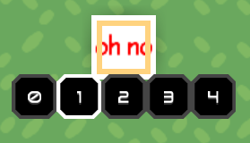
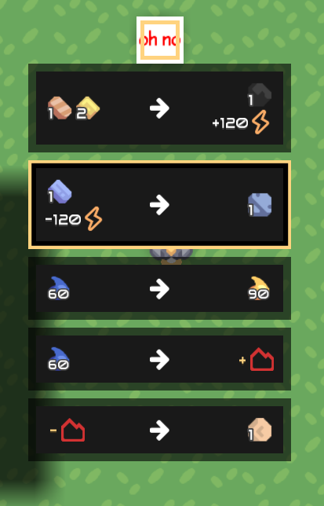
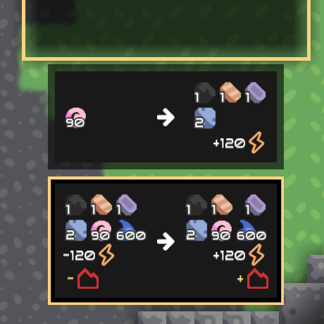
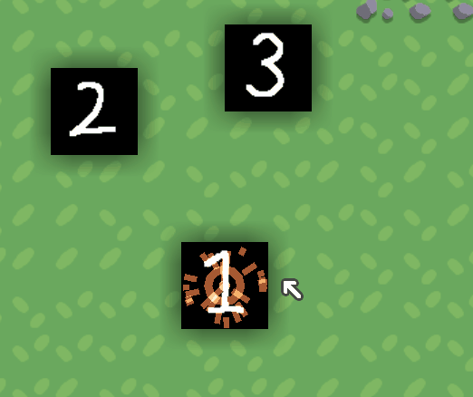

Customize#
Menu Style#
You can select which menu style detailed-described blow you want with a case-insensitive name.
The default menu style is Transform.
Specify#
Suppose you have such structure with a MultiCrafter, named mine-crafter
content/
├─ blocks/
│ ├─ mine-crafter.hjson
menu: Transform
Suppose you have such structure with a MultiCrafter, named mine-crafter
content/
├─ blocks/
│ ├─ mine-crafter.json
"menu": "Transform"
Suppose you have a MultiCrafter, named mine-crafter
const multi = require("multi-crafter/lib")
const mineCrafter = multi.MultiCrafter("mine-crafter")
mineCrafter.menu= "Transform"
Built-in Styles#
Type: Transform


Type: Simple

Type: Number

Type: Detailed


RecipeDraw#
RecipeDraw drawer let you draw different images for each recipe.
Type: multicraft.DrawRecipe
It looks like a DrawMulti, but the drawer will be changed once another recipe is selected.
| Field | Type | Default | Note |
|---|---|---|---|
| drawers | DrawBlock[] | {} | all drawers |
| defaultDrawer | int | 0 | the default drawer index in drawers for icon generation |

drawer: {
type: multicraft.DrawRecipe
drawers: [
{
type: DrawMulti
drawers: [
{
type: DrawRegion
suffix: -1
}
{
type: DrawArcSmelt
}
]
}
{
type: DrawRegion
suffix: -2
}
{
type: DrawRegion
suffix: -3
}
]
}
"drawer": {
"type": "multicraft.DrawRecipe"
"drawers": [
{
"type": "DrawMulti"
"drawers": [
{
"type": "DrawRegion"
"suffix": "-1"
}
{
"type": "DrawArcSmelt"
}
]
}
{
"type": "DrawRegion"
"suffix":"-2"
}
{
"type": "DrawRegion"
"suffix": "-3"
}
]
}